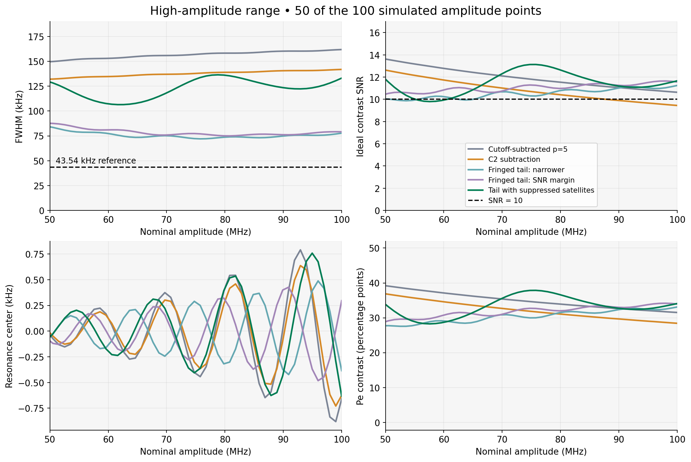
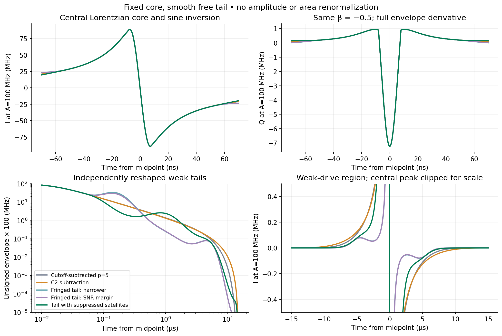
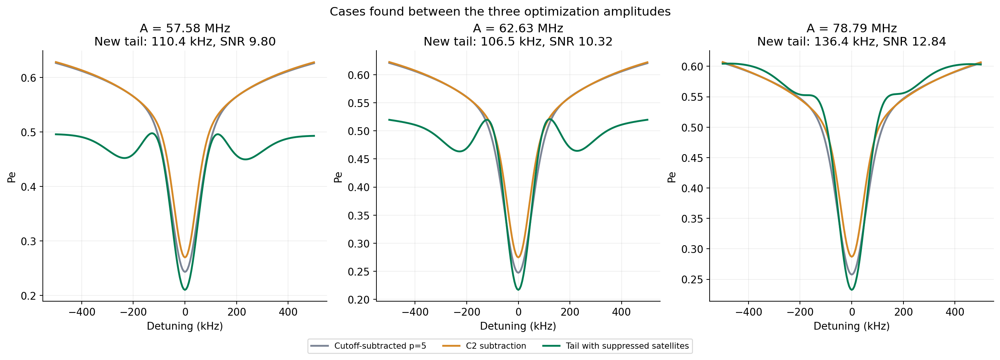
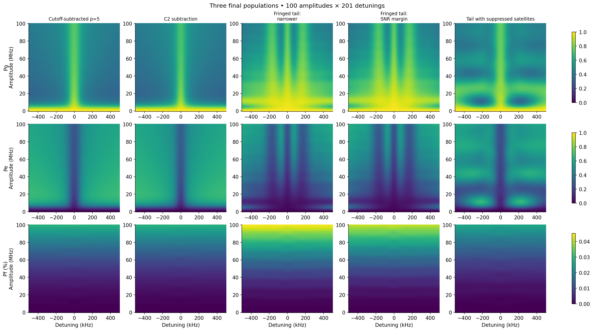
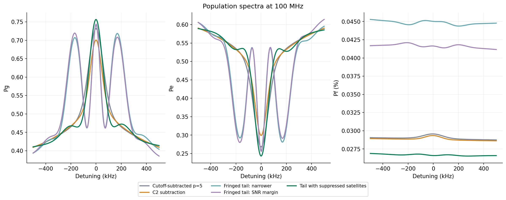
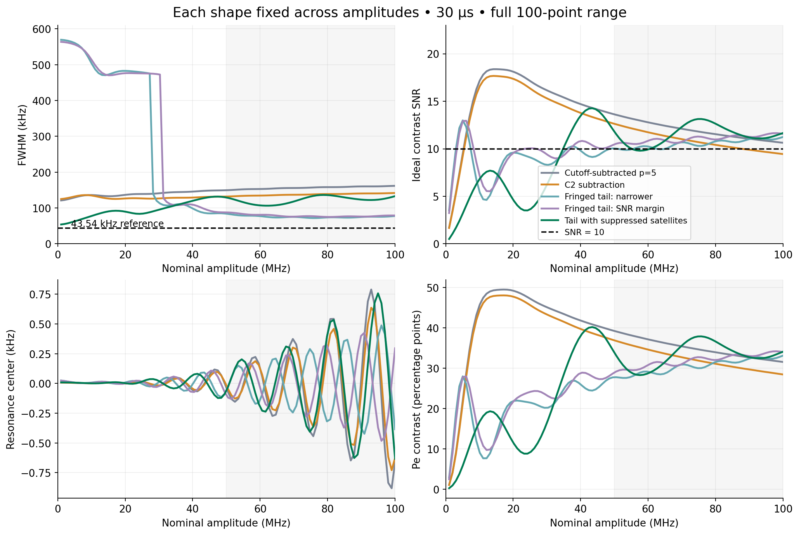
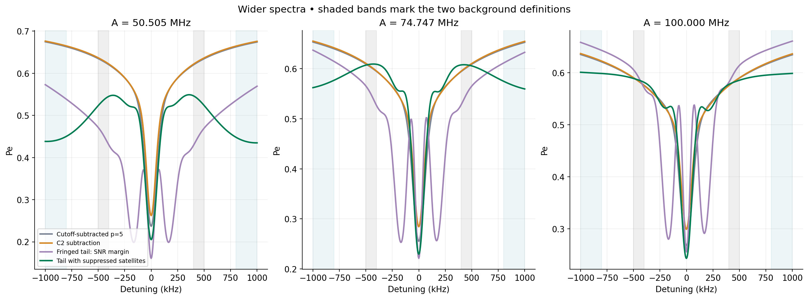

Candidate selected to suppress competing dips, applied unchanged at all amplitudes: worst FWHM 136.42 kHz and minimum ideal SNR 9.799 over all 50 sampled amplitudes from 50.505 to 100 MHz. The width is 3.13 times the 43.54 kHz T₂ reference, and 15.7% below the p=5 control. The joint near-T₂ / SNR-10 target is not achieved across the full range.
The narrowest central feature was not the cleanest resonance. Optimizing only linewidth and SNR produced central widths of 75–88 kHz with SNR above 10, but also two side dips nearly as deep as the center. These are interference fringes, not a single isolated narrow line. We retained those results and repeated the search with a penalty for competing dips. The table distinguishes both outcomes.
Five full maps, each 100 amplitudes from 0 to 100 MHz × 201 detunings × three populations. All use 30 µs duration, the same 15.0000075 ns root-Lorentzian core, β = −0.5, the same 16 ns sine echo inversion, α = −216 MHz, T₁ = 51.24 µs and T₂ = 7.31 µs. No waveform rescaling at individual amplitudes.
Statistics below are conservative extrema over 50.505–100 MHz, and need not occur at the same amplitude. SNR assumes the same ideal 1,000-shot measurement for every pulse. "Near T₂" is operationally FWHM ≤ 50 kHz.
| Pulse | Worst FWHM (kHz) | Minimum SNR | Minimum Pe contrast | Max |center| (kHz) | Max final Pf (%) | Max competing-dip prominence (pp) |
|---|---|---|---|---|---|---|
| Cutoff-subtracted p=5 | 161.85 | 10.636 | 0.315 | 0.880 | 0.0296 | 0.00 |
| C2 subtraction | 141.86 | 9.447 | 0.284 | 0.729 | 0.0293 | 0.00 |
| Fringed tail: narrower | 83.53 | 9.874 | 0.276 | 0.488 | 0.0453 | 26.56 |
| Fringed tail: SNR margin | 87.53 | 10.501 | 0.291 | 0.482 | 0.0421 | 26.24 |
| Tail with suppressed satellites | 136.42 | 9.799 | 0.283 | 0.758 | 0.0269 | 5.63 |

Let f(t) = [1 + (t/σ)²]−1/2, σ = 0.0150000075 µs.
The positive envelope is g(t) = f(t) exp[h(ln |t|)] w(t).
The correction h is exactly zero for |t| ≤ 0.05 µs, so the strong central core
is preserved. Outside that region it is a quintic interpolating spline through
the table below, with its first two derivatives with respect to ln|t| zero at
the first and last knots. Values shown are log multipliers; the selected*.json files
retain full floating-point precision.
| |t| (µs) | h: narrower candidate | h: SNR-margin candidate | h: suppressed-satellite candidate |
|---|---|---|---|
| 0.05 | 0 | 0 | 0 |
| 0.15 | 1.194074084 | 1.071618823 | -0.8945772094 |
| 0.5 | -0.8564975909 | -0.8585929974 | -0.4267166507 |
| 1.5 | -2.194868967 | -2.193787255 | 0.1577108406 |
| 4 | -1.60679775 | -1.626084362 | -1.18429486 |
| 9 | -6.232267933 | -6.232267933 | -5.061788805 |
| 15 | -10.45798107 | -10.45798107 | -8.044265912 |
The endpoint closure is w = 1 for |t| ≤ 13 µs, w = 10u³ − 15u⁴ + 6u⁵ for 13 < |t| < 15 µs, where u = (15 − |t|)/2, and w = 0 outside. Thus g, g′ and g″ vanish at the support endpoints. The signed pulse is I = A s(t)g(t), with the original 16 ns sine inversion s. Q = −β I′/(2π|α|), using the complete analytic product derivative, µs and MHz. The simulated complex envelope is I − iQ.
The envelope is positive and never exceeds its original normalized midpoint value of one. There is no peak or area renormalization. The cutoff c = 0.001 still sets the retained Lorentzian core width; the shaped endpoints are exactly zero. The new tail curve replaces the original single polynomial window.

The physical idea is to control the weak-drive tails independently of the fast core, rather than changing the full duration or one global exponent. The general idea of redistributing ramp speed according to the dynamics is motivated by fast quasiadiabatic control. This is our numerical pulse-design test, not an implementation of that paper's FAQUAD protocol or a literature claim that the target is attainable here.
The six free spline ordinates were selected using amplitudes 50.505, 74.747 and 100 MHz, with 201 detunings and a 0.5 ns RK4 step. The deterministic search used seed 20261011, 32 initial candidates, 15 generations of differential evolution, then up to 200 Powell evaluations; it recorded 607 distinct evaluated shapes. The optimization objective penalizes SNR below 10.2, resonance centers beyond ±10 kHz, and envelopes above the original peak. Among evaluated candidates with minimum SNR ≥ 10, the lowest worst-case linewidth was selected. This is a finite search, not a global optimum.
The first candidate's three-point result was 83.53 kHz and SNR 10.025. Its remaining 47 high-amplitude points were not used in that selection; the full grid revealed minimum SNR 9.874. We then selected the narrowest existing trial whose three-point SNR was at least 10.5, without rerunning the optimizer, and tested this second fixed waveform on the full grid. This is an adaptive follow-up, not a claim that the second selection was blind to the first validation.
Inspecting the full spectra then revealed strong satellite dips. The additional search used the same six-parameter family and the same training amplitudes, but penalized the prominence of any extra Pe minimum at |detuning| ≥ 50 kHz. The optimization target was at most 0.015 population prominence, with a final selection cap of 0.025 (2.5 percentage points). This is measured relative to the neighboring spectral maxima, not the far-off-resonance background. A synthetic single-dip and two-dip check verified the detector.
This second search evaluated 608 distinct shapes over 18 differential-evolution generations with seed 20261012. The selected three-point width/SNR were 133.10 kHz and 11.556. The full 100-point map has maximum competing-dip prominence 5.63 percentage points over 50–100 MHz. Both search stages are documented; the unsuccessful fringed designs are not discarded from the comparison.
The sparse optimization did not guarantee the full amplitude range. The full scan's minimum SNR is 9.799 at 57.58 MHz, its maximum width is 136.42 kHz at 78.79 MHz, and competing-dip prominence reaches 5.63 percentage points at 62.63 MHz. This exceeds the 2.5-point selection cap used at the three optimization amplitudes. The pulse is a partial improvement, not a fully robust solution. All three newly identified cases were also rerun with a 0.25 ns timestep and 2.5 kHz frequency spacing.



The full amplitude range also matters: the fringed candidates lose contrast and broaden substantially below their high-amplitude operating range.

The primary FWHM definition remains exactly the previous one: a central Pe dip and nearest half-depth crossings relative to a linear background fitted at |detuning| = 0.4–0.5 MHz. It is not a Lorentzian fit and is not independent of background choice. We also simulated ±1 MHz at the three selection amplitudes and recomputed the half-depth width using the 0.8–1.0 MHz outer background.

| Pulse | Amplitude (MHz) | Original background (kHz) | Outer background (kHz) |
|---|---|---|---|
| Cutoff-subtracted p=5 | 50.505 | 149.80 | 164.61 |
| Cutoff-subtracted p=5 | 74.747 | 156.90 | 175.90 |
| Cutoff-subtracted p=5 | 100.000 | 161.85 | 183.68 |
| C2 subtraction | 50.505 | 132.14 | 147.60 |
| C2 subtraction | 74.747 | 137.74 | 158.86 |
| C2 subtraction | 100.000 | 141.86 | 167.42 |
| Fringed tail: narrower | 50.505 | 83.53 | 114.65 |
| Fringed tail: narrower | 74.747 | 72.28 | 84.73 |
| Fringed tail: narrower | 100.000 | 77.74 | 85.99 |
| Fringed tail: SNR margin | 50.505 | 87.53 | 118.88 |
| Fringed tail: SNR margin | 74.747 | 77.33 | 90.57 |
| Fringed tail: SNR margin | 100.000 | 79.12 | 89.15 |
| Tail with suppressed satellites | 50.505 | 128.25 | 101.98 |
| Tail with suppressed satellites | 74.747 | 131.58 | 121.04 |
| Tail with suppressed satellites | 100.000 | 133.10 | 137.57 |
Same three-level RWA Lindblad equations, adjacent-level relaxation and number dephasing, Tφ = 7.871480508563624 µs, and no extra phenomenological Stark correction. The new vectorized waveform preparation feeds the existing native RK4 kernel. The p=5 full map reproduces the prior full map within 10⁻¹⁰, and the C2 control reproduces the prior three-amplitude screen within 10⁻¹⁰. Selected waveform derivatives, symmetry, peak and endpoint conditions were checked.
All reported probabilities are finite, within [0,1], and normalized within 10⁻¹⁰. Refinement at the three selection amplitudes gives maximum population change 1.96e-05, maximum linewidth change 2.96 Hz when halving the timestep to 0.25 ns, and 70.33 Hz when halving frequency spacing to 2.5 kHz. This checks numerical resolution, not hardware performance.
The extra checks at the worst intermediate amplitudes give maximum population change 4.67e-06 and combined timestep/grid linewidth change 33.71 Hz.
SNR is shoulder-minus-center Pe divided by ideal Bernoulli noise: 500 shots at the fitted center, 250 each at ±0.45 MHz. It excludes assignment errors, technical noise, drift and the cost of locating the center. It is not a percent contrast. Final Pf does not quantify maximum transient leakage. 1/(πT₂) is the weak-drive Lorentzian reference, not a universal bound on every finite-duration interference feature.
43 focused model/window/metric tests passed and the new scripts pass scoped Ruff. The full test suite stops at collection because Torch is absent; repository-wide Ruff reports 692 existing findings. These environment and repository issues do not replace the numerical and shape checks documented above.
Shape with suppressed satellites · Fringed shape with SNR margin · Narrower shape and search result · Sampled I/Q with suppressed satellites · Fringed sampled I/Q with SNR margin · Narrower sampled I/Q waveform · Full metrics CSV · Full summaries · Numerical checks · Intermediate-amplitude checks · Background checks · Source hashes and reproduction · Comparison PDF · Waveforms PDF